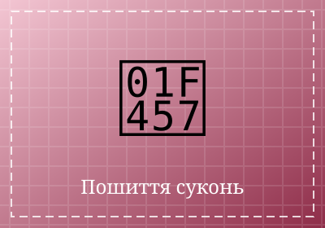
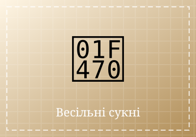
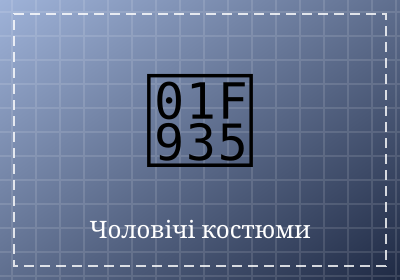
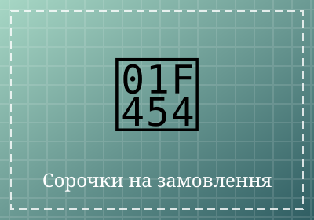
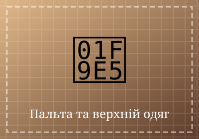
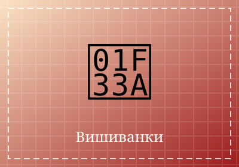
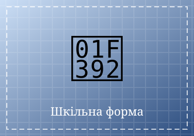
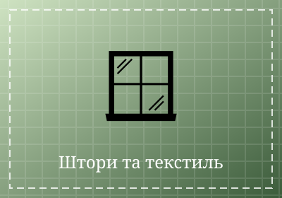
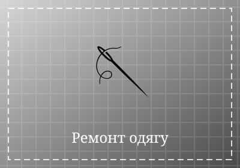

Каталог сервісів ательє
Оберіть сервіс, ознайомтеся з характеристиками та натисніть «Замовити», щоб залишити заявку.
-

Пошиття сукні
Повсякденні, ділові та вечірні сукні за індивідуальними мірками.
- Тип тканини для пошиття: Шовк, віскоза, креп
- Термін виконання: 7 днів
- Примірки: 2 примірки
- Гарантія на шви: 6 місяців
- Вартість: 2 800 грн
Замовити
-

Весільна сукня
Ексклюзивні весільні сукні з корсетом, шлейфом і ручною вишивкою.
- Тип тканини для пошиття: Атлас, фатин, мереживо
- Термін виконання: 30 днів
- Примірки: 3–4 примірки
- Гарантія на шви: 6 місяців
- Вартість: від 15 000 грн
Замовити
-

Класичний чоловічий костюм
Двійка або трійка класичного чи сучасного крою.
- Тип тканини для пошиття: Італійська вовна
- Термін виконання: 21 день
- Примірки: 3 примірки
- Гарантія на шви: 6 місяців
- Вартість: 9 500 грн
Замовити
-

Сорочка на замовлення
Сорочки з монограмою, вибір коміра та манжет.
- Тип тканини для пошиття: Бавовна, поплін
- Термін виконання: 5 днів
- Примірки: 1 примірка
- Гарантія на шви: 6 місяців
- Вартість: 1 400 грн
Замовити
-

Пальто
Демісезонні та зимові пальта з утепленою підкладкою.
- Тип тканини для пошиття: Кашемір, драп
- Термін виконання: 25 днів
- Примірки: 3 примірки
- Гарантія на шви: 6 місяців
- Вартість: 8 000 грн
Замовити
-

Вишиванка
Сорочки з машинною або ручною вишивкою за етнічними мотивами.
- Тип тканини для пошиття: Льон, домоткане полотно
- Термін виконання: 14 днів
- Примірки: 1 примірка
- Гарантія на шви: 6 місяців
- Вартість: 3 500 грн
Замовити
-

Шкільна форма
Комплекти шкільної форми для хлопчиків і дівчаток.
- Тип тканини для пошиття: Костюмна тканина, габардин
- Термін виконання: 10 днів
- Примірки: 1 примірка
- Гарантія на шви: 6 місяців
- Вартість: 2 200 грн
Замовити
-

Пошиття штор
Штори, тюль, ламбрекени та покривала для оселі.
- Тип тканини для пошиття: Блекаут, льон, вуаль
- Термін виконання: 7 днів
- Примірки: Замір вдома
- Гарантія на шви: 6 місяців
- Вартість: від 600 грн/м
Замовити
-

Ремонт та підгонка одягу
Підшивання, заміна блискавки, вшивання, реставрація.
- Тип тканини для пошиття: Тканина клієнта
- Термін виконання: 1–2 дні
- Примірки: Без примірки
- Гарантія на шви: 6 місяців
- Вартість: від 150 грн
Замовити